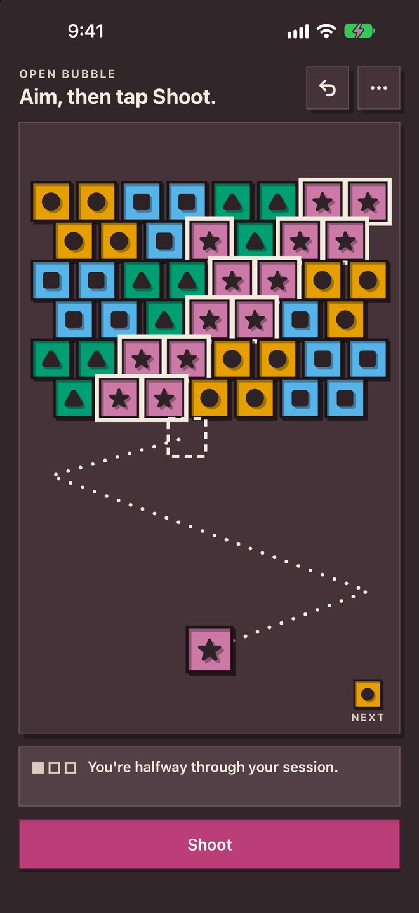
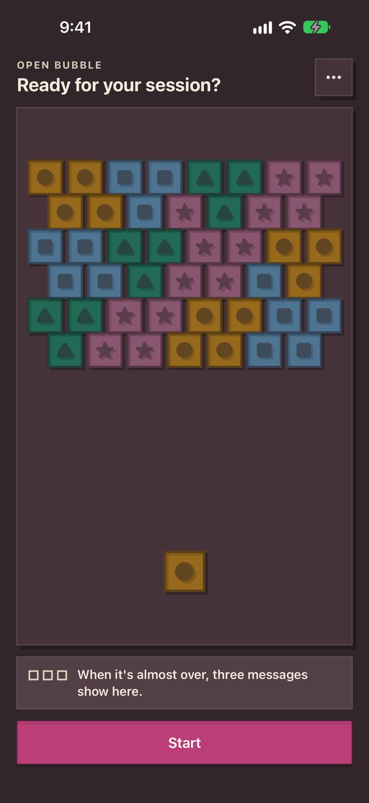
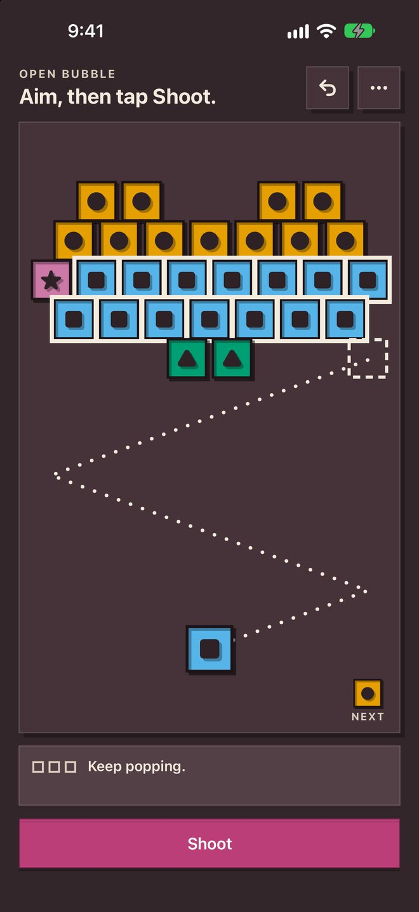

“There are full screen ads that are unmuted despite the app being on mute”
Bubble Shooter Rainbow on the App Store
What Open Bubble does instead
No ads. Sound is off unless you turn it on, and it follows the silent switch.
Open AppCo app #12
A calm bubble shooter in sessions. See what pops before you shoot.
Address Apple's review feedback for version 1.0.0, then resubmit.
The actual app



133 second walkthrough
In the iOS Simulator, silent: aim and shoot, undo, swap the next bubble, the last two session messages, the session ending after the last shot, and a new session.
Why this app exists
We read 15,619 App Store reviews of 23 bubble shooters. These complaints kept coming up.
“There are full screen ads that are unmuted despite the app being on mute”
Bubble Shooter Rainbow on the App Store
No ads. Sound is off unless you turn it on, and it follows the silent switch.
“it gives you every color that you don’t need so your wasting hits until you lose”
Bubble Shooter Classic Match on the App Store
The bubble you get is always a color still on the board, and the next one is shown.
“Too easy to set off a shot when it’s not intended”
Bubble Shooter Classic Match on the App Store
Aiming never fires. Only the Shoot button does, after you see where it will land.
“any pop up makes it overstimulating”
Bubble Shooter - Panda Pop! on the App Store
No pop-ups. Three short session messages sit in a fixed line under the board.
“A few colours are hard to differentiate if you’re colourblind like I am.”
Shoot Bubbles - Bubble Pop on the App Store
Every color has its own printed mark: circle, square, triangle, diamond, cross, star.
“Used to love this game but it froze so I had to delete.”
Bubble Mags - bubble shooter on the App Store
It saves after every shot on your iPhone, so nothing is lost if it closes.